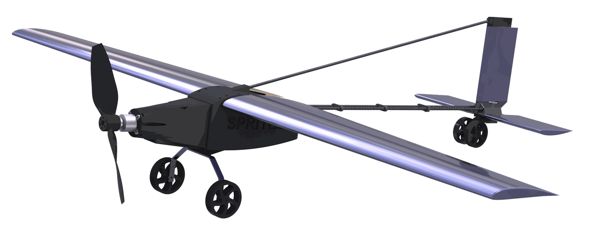
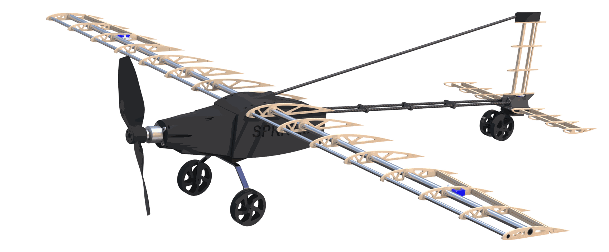

Projects
Selected Work
Drivetrain
FRC 2056 · Mechanical
A 32" × 28" swerve base on MK4i modules — Kraken X60 drive geared to 15 ft/s, Kraken X44 steering.
Requirements
- Agile, responsive, and highly controllable.
- Extremely robust, rigid, and reliable.
- Low centre of mass (CoM).
- Must provide rigid structure and mounting of subsystems.
Details
- Constructed of 3" x 1" x 1/8" aluminum tubing for stiffness and a lower chassis. A 1/16" solid aluminum baseplate acts as a shear plate, offers a mounting surface for electronics, and lowers the overall CoM to improve stability.
- Maximum chassis size of 32" long by 28" wide to ensure stability when scoring.
- The corners of the baseplate are bolted, adding extra support to the rivets.
- The baseplate is fastened directly to the elevator gearbox, and an aluminum angle riveted along the baseplate near the battery prevents sagging.
- Utilizes Swerve Drive Specialties MK4i modules, selected for their proven reliability, low CoM, and team familiarity.
- Powered by Kraken X60 motors for a top speed of 15 ft/s. The L2 gear ratio balances speed and acceleration for the game's short cycle distances.
- Each swerve module steers with a Kraken X44 on a custom shifted adapter plate and a 12-tooth pinion, saving nearly 2 lbs.
Autonomous RC Aircraft
TMU Aero Design · Aerospace

A 5.5 ft wingspan autonomous airframe — FEA-validated and flight-tested.
Highlights
-
5.5 ft wingspan airframe designed in SolidWorks
- Built from plywood, aluminum spars, and carbon fibre composites for a high strength-to-weight structure
-
Static structural FEA on the landing gear under landing-impact loading
- Redesign validated on real landings
VitalGroove
MakeUofT · RoboticsAn end-to-end sense–think–act robot built on an NVIDIA Jetson Nano in 24 hours.
Highlights
-
Full perception-to-actuation loop on a Jetson Nano
- Computer vision detects human interaction, a VLM pipeline decides, and motors actuate
-
Brought up the entire hardware stack under a 24-hour deadline
- Debugged wiring, power, and inference latency to keep real-time control stable under live camera feeds